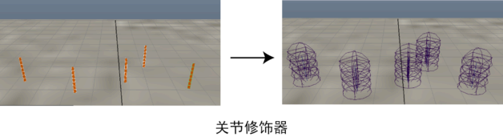

使用此工具借助于 FK 和样条线 IK 移动导向。

-
FK 关节链(FK Joint Chain)
-
启用时，Maya 会使用正向运动学 (FK) 创建带样条线的关节链。
-
样条线 IK 关节链(Spline IK Joint Chain)
-
启用时，Maya 将创建样条线反向运动学 (IK) 关节链。
-
锁定长度(Lock Length)
-
锁定曲线长度以防止曲线上 CV 之间的拉伸。
-
拉伸曲线(Stretchy Curve)
-
允许曲线上的 CV 之间进行拉伸。
-
关节/CV 数(Number of Joint/CVs)
-
设置曲线上每 CV 的关节数。
-
选择(Selection)
- 设置创建关节链后的选择模式。
-
第一个簇(1st Cluster)
- 选择关节链中的第一个关节簇。
-
关节层次(Joint Hierarchy)
- 选择关节链中的所有关节簇。